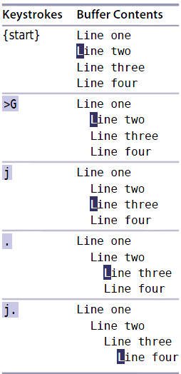

技巧1: 认识.命令
.:重复上次修改
x:删除光标所在的字符
u:撤销上次修改
dd: 删除光标所在行
>G:从当前行到最后一行，每行增加一层缩进
>$:当前行向右缩进一层><Cr>: 当前行和其下一行向右缩进一层<Cr>:回车键>3<Cr>: 当前行和其下3行向右缩进一层>4j:当前行和其下4行向右缩进一层>5j:当前行和其上5行向右缩进一层
上下左右移动光标
h:将光标向左移动一个字符l:将光标向右移动一个字符j:将光标垂直向下移动一个字符k:将光标垂直向上移动一个字符
例子: 缩进代码

| 上一篇 | 下一篇 |
|---|---|
| README | 技巧2 不要自我重复 |